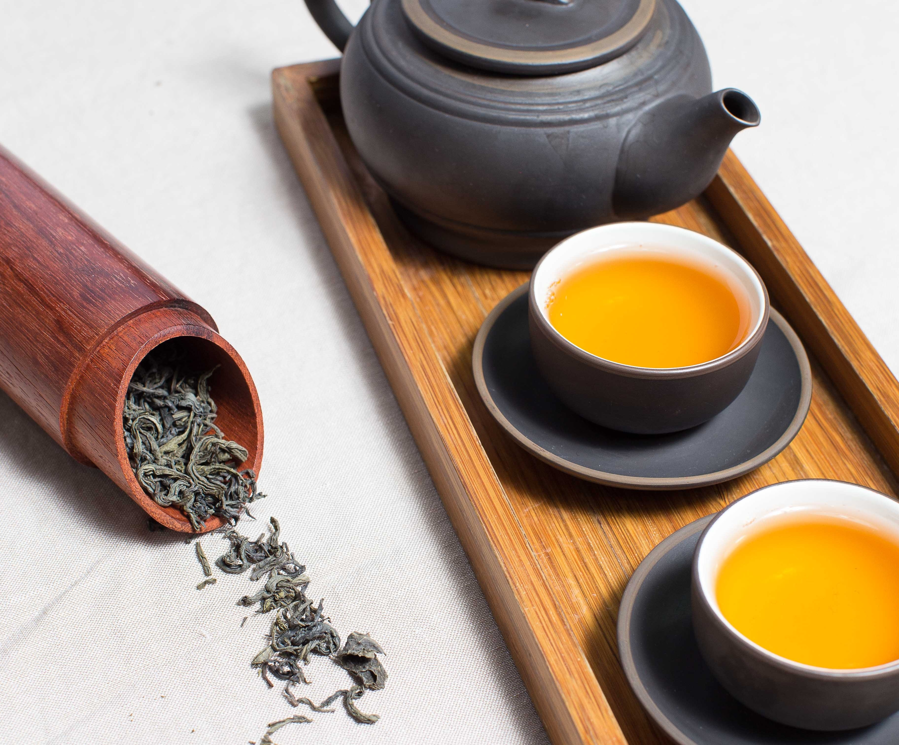
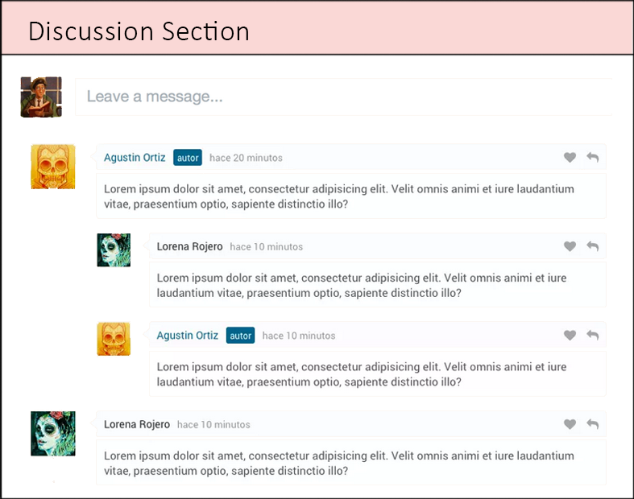

Bruger Klumme #12: Hvornår glemte vi lige te?
 At drikke te er noget der burde være en alle mands eje. Jeg beundrer de, som ikke drikker te, de som sætter sig foran fjernsynet, ser men ikke kigger, dem beundre jeg, fordi de sidder der bare, tænker ikke over det, indhalere og mærker ikke den varme, den kærlighed og de ingredienser som teen tilsætter tilstedeværelsen.Jeg har altid drukket te, det har altid fyldt et alfa og omega. Min familie har altid drukket te. Mine venner drikker te. Måske det alligevel ikke er så unormalt, måske det er det, jeg beundre – at der findes folk, som ikke drikker te.
Dette er desværre bare ikke tilfældet – ikke i Danmark - for statistikker og meningsmålinger viser det stik modsatte. Ungdommen rykker sig væk fra te! Er det den travle hverdag, seen, men ikke kiggen? Eller hvordan var det nu vi kom til den dag, den tidsalder, hvor vi i Danmark ikke sætter os ned og nyder en kop te.
For te er så meget mere end bare et lille brev. Det indeholder så mange gode ting og sager, og mest af alt, mest af alt indeholder det minder. Minder fra min barndom, da vi sad rundt om det runde bord. Det mine forældre knapt havde råd til, sad der og nød vores kop chai inden sengetid. Jeg har aldrig kunnet lide chai te, men det fortalte jeg ikke, fordi så vidste jeg, at jeg ikke fik te. Resultatet deraf var, at jeg skulle tidligt i seng. Og dét ville jeg ikke!
I dag, når jeg ser tilbage på det, var det ikke, fordi jeg ikke ville tidligt i seng, det var denne her kærlighed, det nærvær og frirum med mine forældre udefra dagens hektiske virkelighed.
Vi sad foran fjernsynet, vi så det ikke, vi kiggede ikke. Men vi var der.
Indsændt af Shahriar Hossain
